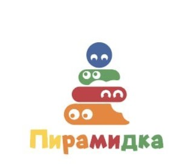

Разработанную с учетом возрастных и индивидуальных сенсорных особенностей в развитии ребенка с РАС;
Для изучения дисциплины прикладного анализа поведения как родителей детей с расстройством аутистического спектра, так и практикующим специалистам в этой сфере;
Для детей с расстройством аутистического спектра, родителей, специалистов.
На основе методов и процедур прикладного анализа поведения, экспериментально доказанными результатами на основе исследований.
Составляемые в соответствии с российским образовательным стандартом нового поколения, а также с международными требованиями сертификационной комиссии ВАСВ;
Для сдачи различных международных экзаменов.